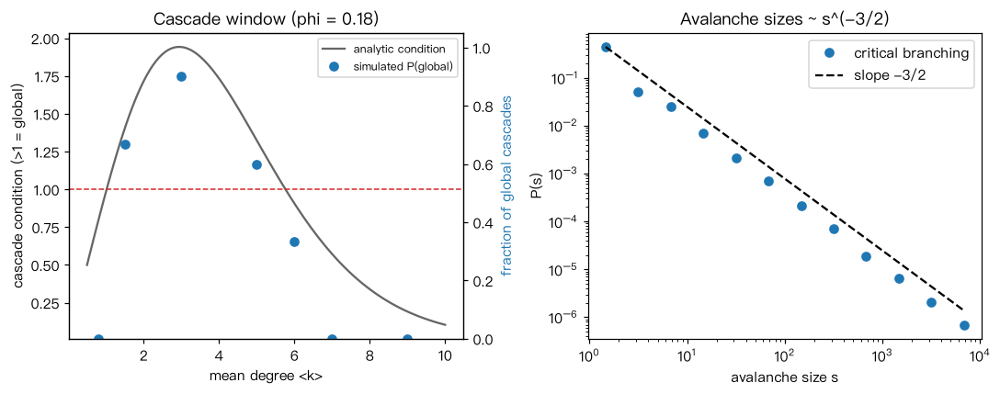

Example05 / 09
Watts 阈值级联的"级联窗口"与分支过程
Watts 模型：节点在失效邻居比例 >= phi 时失效。度 k <= 1/phi
的节点是”易损节点”（一个失效邻居即可触发）。 全局级联条件：sum_k k(k-1)
rho_k P(k) >
Output输出图

Output文字输出
<k>=0.8 解析判据 0.79 (>1 才可能全局级联) 模拟全局级联比例 0.00 <k>=1.5 解析判据 1.40 (>1 才可能全局级联) 模拟全局级联比例 0.67 <k>=3.0 解析判据 1.94 (>1 才可能全局级联) 模拟全局级联比例 0.90 <k>=5.0 解析判据 1.33 (>1 才可能全局级联) 模拟全局级联比例 0.60 <k>=6.0 解析判据 0.91 (>1 才可能全局级联) 模拟全局级联比例 0.33 <k>=7.0 解析判据 0.57 (>1 才可能全局级联) 模拟全局级联比例 0.00 <k>=9.0 解析判据 0.19 (>1 才可能全局级联) 模拟全局级联比例 0.00 超临界分支过程的灭绝概率 q = 0.5 临界分支过程雪崩规模分布的拟合指数 alpha ≈ 1.51（理论 1.5）
Code代码
# Watts 模型：节点在失效邻居比例 >= phi 时失效。度 k <= 1/phi 的节点是"易损节点"（一个失效邻居即可触发）。
# 全局级联条件：sum_k k(k-1) rho_k P(k) > <k>，rho_k = 1 若 k <= floor(1/phi)。对 ER 网络扫描 <k> 得到级联窗口，并与模拟比较。
# 分支过程部分：后代分布 p0, p1, p2 的灭绝概率 q 满足 q = g(q)；临界分支过程的雪崩规模分布 P(s) ~ s^{-3/2}。
# 解读：<k> 太小（网络不连通）或太大（易损节点太少）都不会出现全局级联；窗口边界附近有限规模效应明显，
# 解析判据略小于 1 时模拟仍可能出现少量全局级联。临界分支过程的对数斜率接近 -1.5。
import numpy as np
import networkx as nx
from scipy.stats import poisson
def watts_condition(kmean, phi, kmax=60):
k = np.arange(kmax); P = poisson.pmf(k, kmean)
rho = (k <= np.floor(1 / phi)).astype(float); rho[0] = 0
return np.sum(k * (k - 1) * rho * P) / kmean
def watts_sim(n, kmean, phi, trials=30, seed=0):
G = nx.fast_gnp_random_graph(n, kmean / (n - 1), seed=seed)
rng = np.random.default_rng(seed); big = 0
deg = dict(G.degree())
for _ in range(trials):
failed = {int(rng.integers(n))}; frontier = list(failed)
while frontier:
new = []
for v in frontier:
for w in G[v]:
if w not in failed and deg[w] > 0 and sum(x in failed for x in G[w]) / deg[w] >= phi:
failed.add(w); new.append(w)
frontier = new
big += len(failed) > 0.1 * n
return big / trials
phi = 0.18
kms, sims = [0.8, 1.5, 3, 5, 6, 7, 9], []
for km in kms:
sims.append(watts_sim(3000, km, phi))
print("<k>=%.1f 解析判据 %.2f (>1 才可能全局级联) 模拟全局级联比例 %.2f" % (km, watts_condition(km, phi), sims[-1]))
# 分支过程：p0=0.25, p1=0.25, p2=0.5 -> 平均后代 1.25，灭绝概率 q = 0.5（手算见正文）
g = lambda q: 0.25 + 0.25 * q + 0.5 * q ** 2
q = 0.0
for _ in range(200):
q = g(q)
print("超临界分支过程的灭绝概率 q =", round(q, 4))
rng = np.random.default_rng(1); sizes = []
for _ in range(20000): # 临界：p0 = p2 = 1/2
active, s = 1, 1
while active > 0 and s < 10 ** 5:
kids = 2 * rng.integers(0, 2, size=active).sum()
active = kids; s += kids
sizes.append(s)
sizes = np.array(sizes)
bins = np.logspace(0, 4, 13); h, e = np.histogram(sizes, bins=bins, density=True)
c = np.sqrt(e[1:] * e[:-1]); ok = h > 0
print("临界分支过程雪崩规模分布的拟合指数 alpha ≈ %.2f（理论 1.5）" % -np.polyfit(np.log(c[ok][2:]), np.log(h[ok][2:]), 1)[0])
import matplotlib.pyplot as plt
fig, (ax1, ax2) = plt.subplots(1, 2, figsize=(10, 4))
kg = np.linspace(0.5, 10, 120)
ax1.plot(kg, [watts_condition(x, phi) for x in kg], c="0.4", label="analytic condition")
ax1.axhline(1, ls="--", c="tab:red", lw=1)
ax1.set_xlabel("mean degree <k>"); ax1.set_ylabel("cascade condition (>1 = global)")
ax1b = ax1.twinx(); ax1b.plot(kms, sims, "o", c="tab:blue", label="simulated P(global)")
ax1b.set_ylabel("fraction of global cascades", color="tab:blue"); ax1b.set_ylim(0, 1.05)
ax1.set_title("Cascade window (phi = %.2f)" % phi)
h1, l1 = ax1.get_legend_handles_labels(); h2, l2 = ax1b.get_legend_handles_labels(); ax1.legend(h1 + h2, l1 + l2, fontsize=8)
ax2.loglog(c[ok], h[ok], "o", label="critical branching")
ax2.loglog(c[ok], h[ok][0] * (c[ok] / c[ok][0]) ** -1.5, "k--", label="slope -3/2")
ax2.set_xlabel("avalanche size s"); ax2.set_ylabel("P(s)"); ax2.legend(); ax2.set_title("Avalanche sizes ~ s^(-3/2)")
plt.tight_layout(); plt.show()Run在浏览器中运行
首次加载 Python 环境约需 20–40 秒；可以修改参数后重新运行。